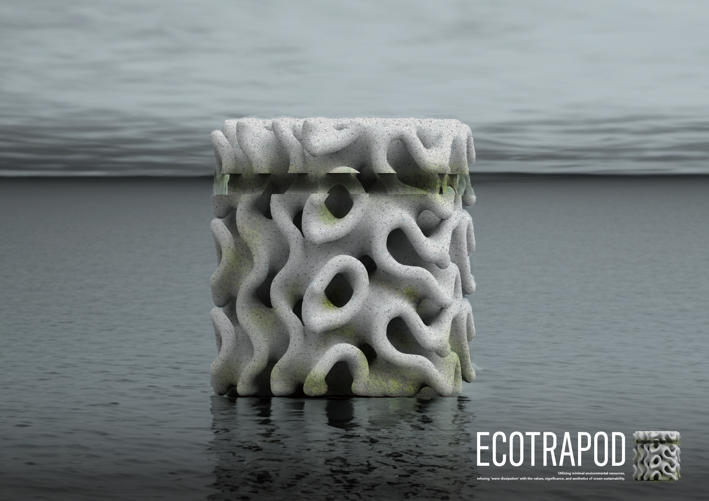
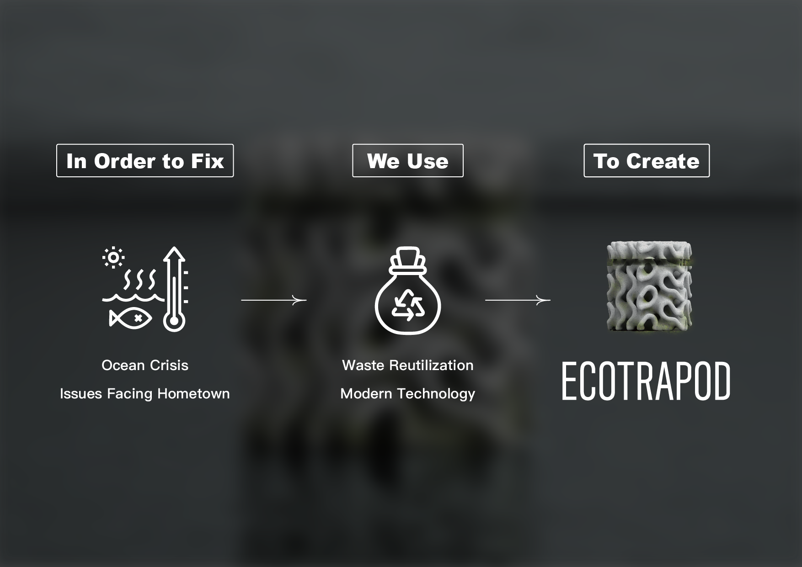
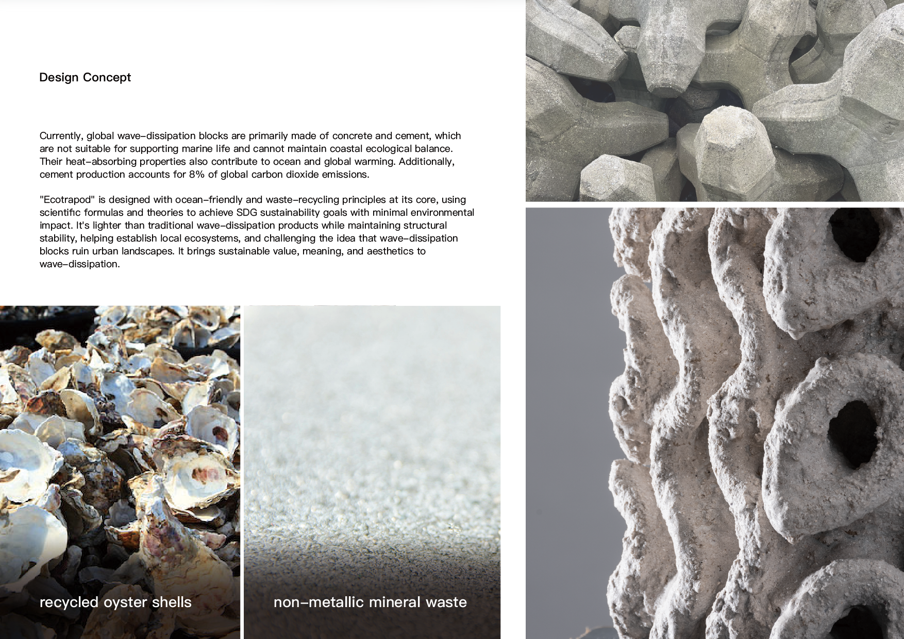
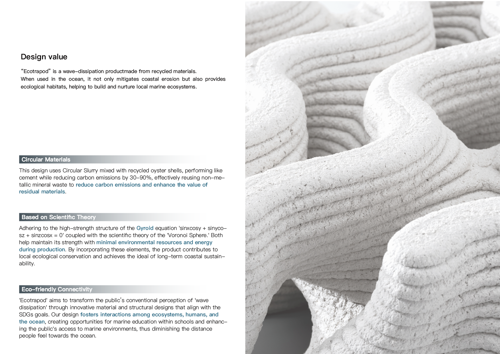
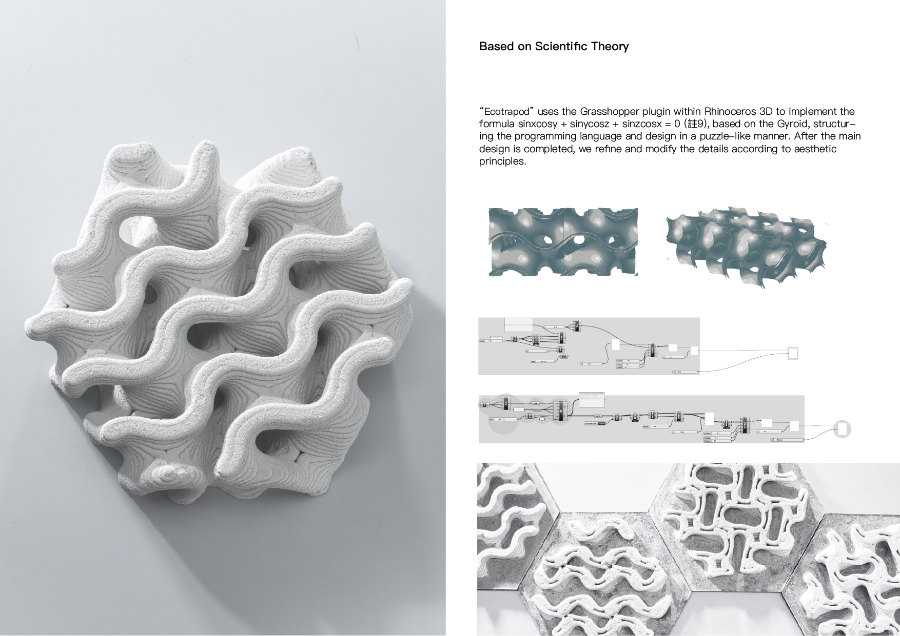
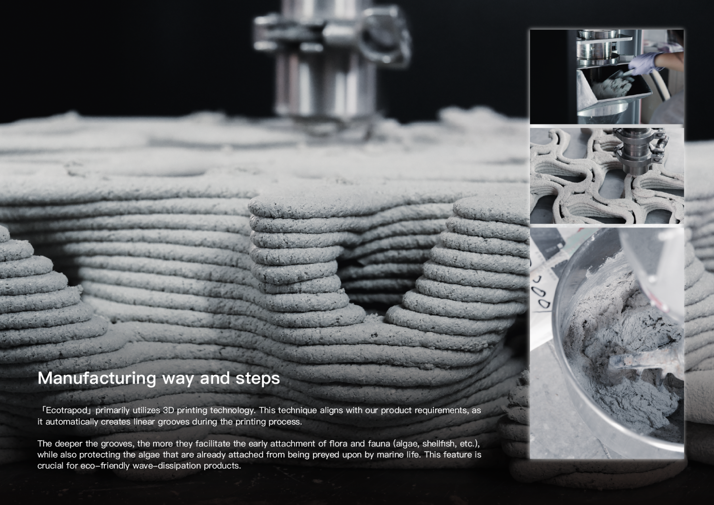

Ecotrapod
A regenerative tetrapod that breaks waves — and invites the sea back in.
Overview
Concrete tetrapods protect coastlines, but their sealed surfaces turn miles of shore into sterile walls. Ecotrapod rethinks the form: a porous, biomimetic geometry that dissipates waves while offering shelter for algae, mollusks, and small fish to return.
Hard shorelines, hollow ecosystems.
Conventional tetrapods are engineered purely for wave energy. They work — but they also replace living intertidal zones with smooth, uninhabitable surfaces, accelerating biodiversity loss along the same coasts they protect.
I wanted a structure that could do the engineering job and also let the ecosystem come back home.


Porosity as protection.
The geometry is generated from stacked triply-periodic minimal surfaces — the same family of curves found in corals and bones. The interlocking cavities dissipate wave energy from every angle, while creating micro-habitats at varying depths and light levels.
Material studies pushed toward low-carbon, mycelium-bonded aggregate: strong enough for coastal loads, slowly acquiring the patina of real life on its skin.



A coastline that keeps growing.
Ecotrapod was recognized at iF Student Design Award and Golden Pin Design Award 2024. Beyond the trophy, its real promise is slower: over years, a line of these forms should turn from grey concrete into the textured green of a shoreline that's quietly repairing itself.